圆明园 The Old Summer Palace before October 1860
The Old Summer Palace before October 1860
The gardens from the south, a summer evening
At this height the AI drew the layout freely: an impression, not a map.


From the south, about 800 m up, looking north
Three gardens, one residence: a model built from evidence.
The palace north-west of Beijing was made up of three gardens: 圆明园 Yuanming Yuan, "Garden of Perfect Brightness"; 长春园 Changchun Yuan, "Garden of Eternal Spring"; and 绮春园 Qichun Yuan, "Garden of Elegant Spring".
Building began under the Kangxi Emperor in the early 1700s, and the Yongzheng and Qianlong Emperors enlarged it. From Qianlong on it was the main imperial residence, where the emperors handled state affairs. The Forbidden City was used for formal ceremonies.
Most of it was Chinese: halls, lakes and hills arranged as scenes. Along the back of Changchun Yuan stood a small group of European-style palaces, 西洋楼 Xiyang Lou, begun in 1747, designed by the Jesuit Giuseppe Castiglione, with fountains by Michel Benoist.
What you see here is reconstructed, not surveyed. Every building carries its sources and a grade, A, B or C, and where the evidence runs out we guess and say so.

Why just before October 1860.
We rebuild the gardens as they stood in the last years of the Xianfeng reign, just before their destruction. The album of 1744 and the copperplates of the 1780s count for that state wherever nothing later contradicts them.
Our base is a large Qing plan of the gardens that draws every hall by its bays, in a state of the Daoguang and Xianfeng reigns. It gives the positions and footprints; the paintings, engravings, texts and digs give the rest.
- 1707–09The Kangxi Emperor grants the land to Prince Yinzhen, the later Yongzheng Emperor.
- 1725Yongzheng builds the audience hall and offices on the south side.
- 1744The Forty Scenes are named and painted.
- 1747Work begins on the European palaces in Changchun Yuan.
- 1770–74Qichun Yuan joins the gardens.
- 1855The last dated addition we have found: the theatre of 同道堂 Tongdao Tang.
The gardens, as painted and as our model pictures them.
The first pictures are period evidence: leaves of the 1744 album and the copperplates of the 1780s. The pictures after them are AI pictures made from our 3D model, not evidence: each one says so, says what the AI added, and has a small map of where it looks from.
Engraved and painted while the gardens stood.

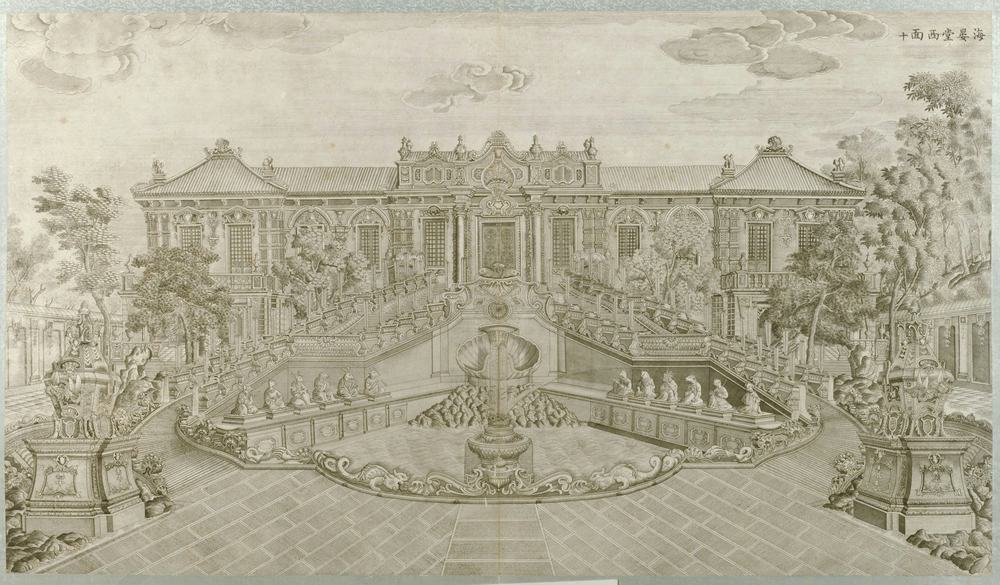
海晏堂 Haiyan Tang, the west front
Plate 10 of the twenty copperplate views of the European palaces. The double stair of the west front embraces the basin of the water clock. Our model of it, built in Round 14, is fitted to this plate.
Yi Lantai, 1786. Palace Museum, Beijing, via Wikimedia Commons, public domain. Credit
Period evidence
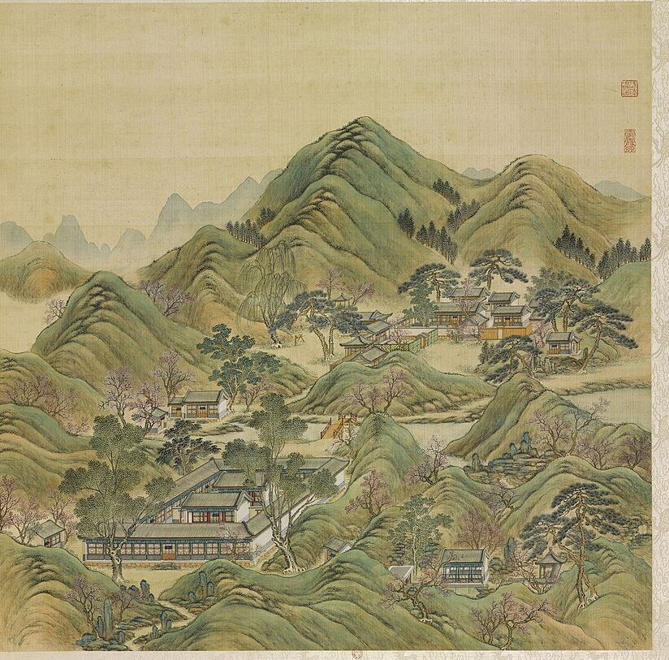
Album leaf, 1744武陵春色 Wuling Chunse, "Spring Colours of Wuling"
Leaf 14 of the Forty Scenes: a peach-blossom valley among hills, after the old tale of the hidden village.
唐岱 Tang Dai and 沈源 Shen Yuan, 1744. Source gallica.bnf.fr / BnF. Credit
Period evidence
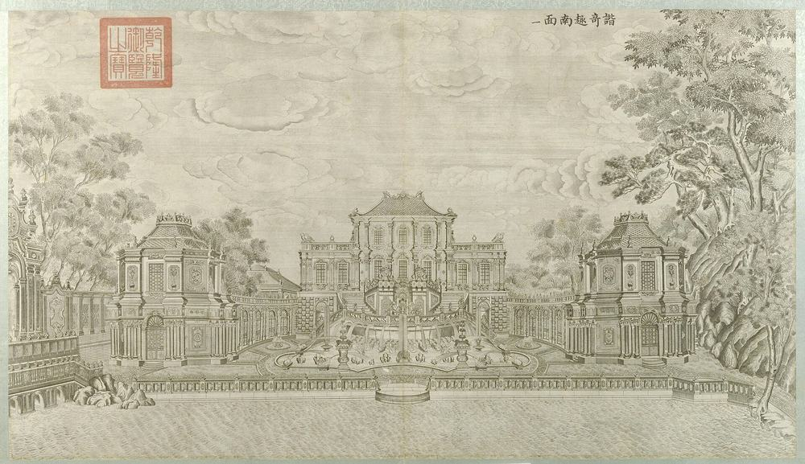
Copperplate, 1783-86谐奇趣 Xieqiqu from the south
Plate 1 of the copperplates. Our first detailed model, of Round 13, is fitted to this plate and to five photographs of the ruin taken in 1873.
Yi Lantai, 1786. Palace Museum, Beijing, via Wikimedia Commons, public domain. Credit
Period evidenceA day in the gardens, from our model.

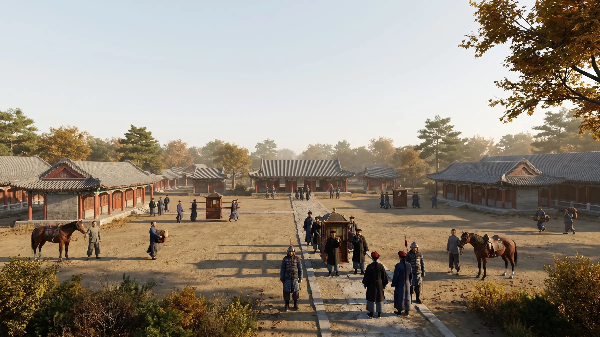
AI visualisationThe forecourt of 大宫门 Da Gongmen, an autumn morning
At eye level in the forecourt south of the main gate, looking north at the gate and the ranges on either side.
The gate and the side ranges stand where our model of Round 19 puts them. The officials, horses and sedan chair are imagined; the roofs and trees are the AI's.
From the south, at eye level, looking north. Nearest landmark: 大宫门 Da Gongmen, about 70 m.
Open this view in 3DIn 3D: 大宫门 Da Gongmen

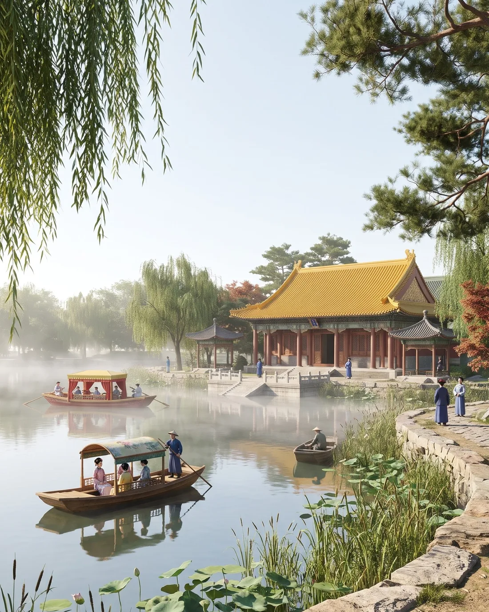
AI visualisation福海 Fu Hai at dawn
Mist on the Sea of Blessings, looking across the water to 蓬岛瑶台 Pengdao Yaotai from a little above the lake.
Only the island's place and the direction of the view come from our model. The hall, the shore in front, the boats and the people are the AI's.
From the south-east, a few metres up, looking north-west. Nearest landmark: 蓬岛瑶台 Pengdao Yaotai, about 80 m.
Open this view in 3DIn 3D: 蓬岛瑶台 Pengdao Yaotai

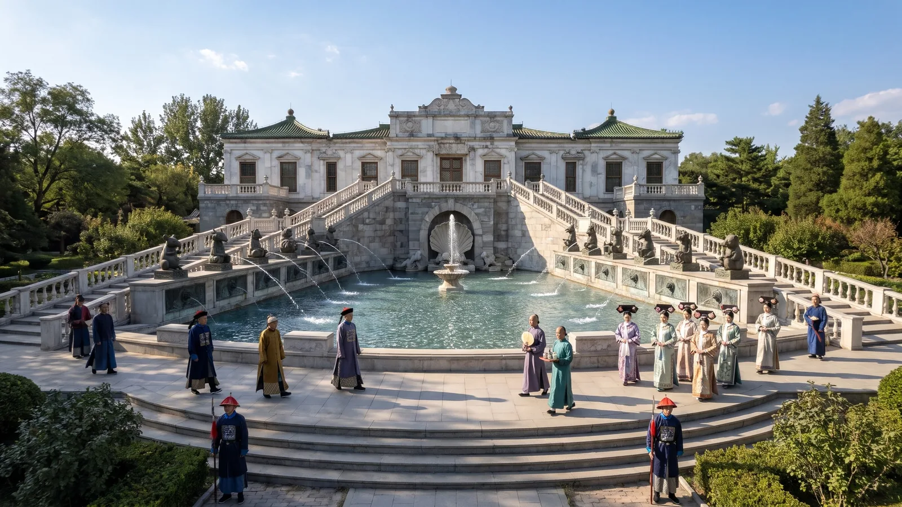
AI visualisationThe west front of 海晏堂 Haiyan Tang, an afternoon
The double stair embracing the basin of the water clock and its twelve seated figures, in low afternoon sun.
The front, the stair and the basin follow our model of Round 14 and the copperplates. The people and their dress are imagined.
From the west, a few metres up, looking east. Nearest landmark: 海晏堂 Haiyan Tang, about 50 m.
Open this view in 3DIn 3D: 海晏堂 Haiyan Tang

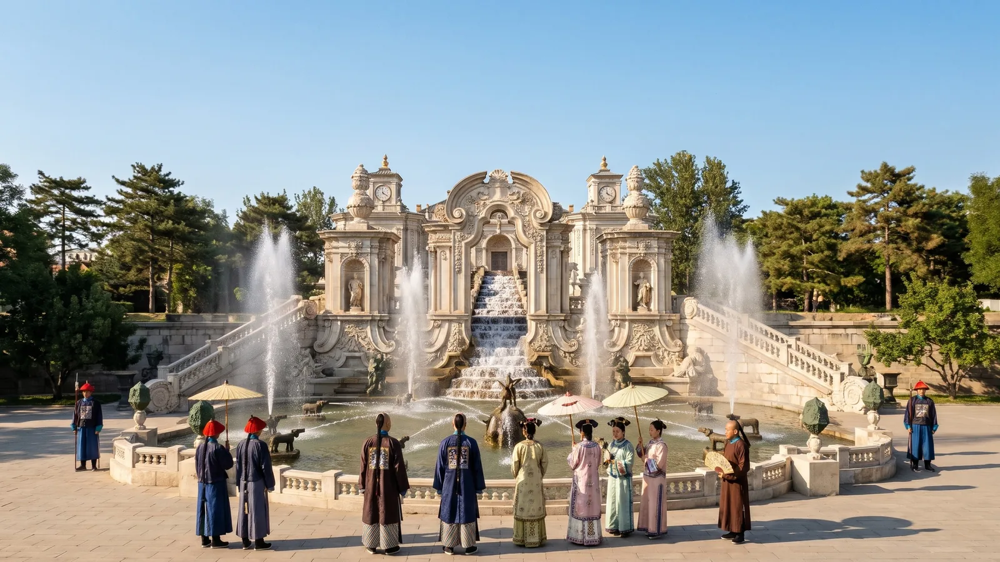
AI visualisation大水法 Da Shuifa, the Great Fountain, playing
From the court in front: the niche, the water steps, the basin with the stag and hounds, and the two towers of jets.
The niche, the steps, the basin and the towers follow our model of Round 15 and plate 15. The people, the parasols and the trees behind are the AI's.
From the south, at eye level, looking north. Nearest landmark: 大水法 Da Shuifa, about 30 m.
Open this view in 3DIn 3D: 大水法 Da Shuifa

A night of lanterns by 福海 Fu Hai, imagined
Red lanterns along a hall on the shore under a full moon. The night is imagined, not a recorded festival.
Only the viewpoint comes from our model, and loosely. The hall, the lanterns and the people are the AI's.
From the south-east, a few metres up, looking north-west. Nearest landmark: 蓬岛瑶台 Pengdao Yaotai, about 80 m.
Open this view in 3DIn 3D: 福海 Fu Hai

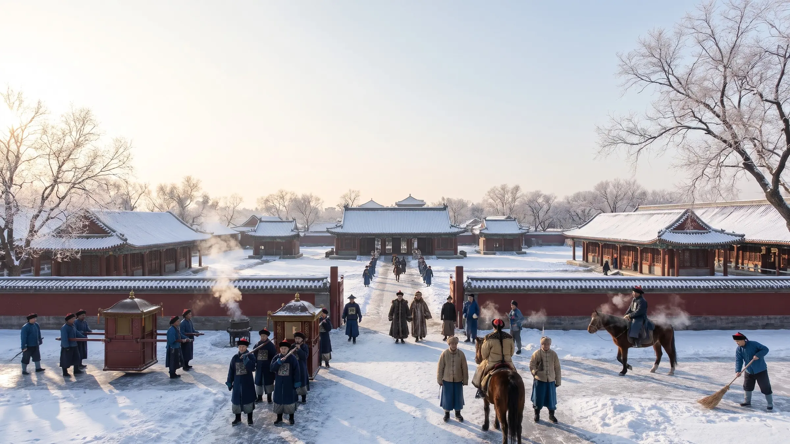
AI visualisationThe forecourt of 大宫门 Da Gongmen in snow
The same forecourt on a winter morning, looking north to the gate.
The gate and the side ranges follow our model. The walls across the court, the sedan chairs, the riders and the smoke are the AI's.
From the south, at eye level, looking north. Nearest landmark: 大宫门 Da Gongmen, about 70 m.
Open this view in 3DIn 3D: 大宫门 Da Gongmen
Unrolled like a handscroll.

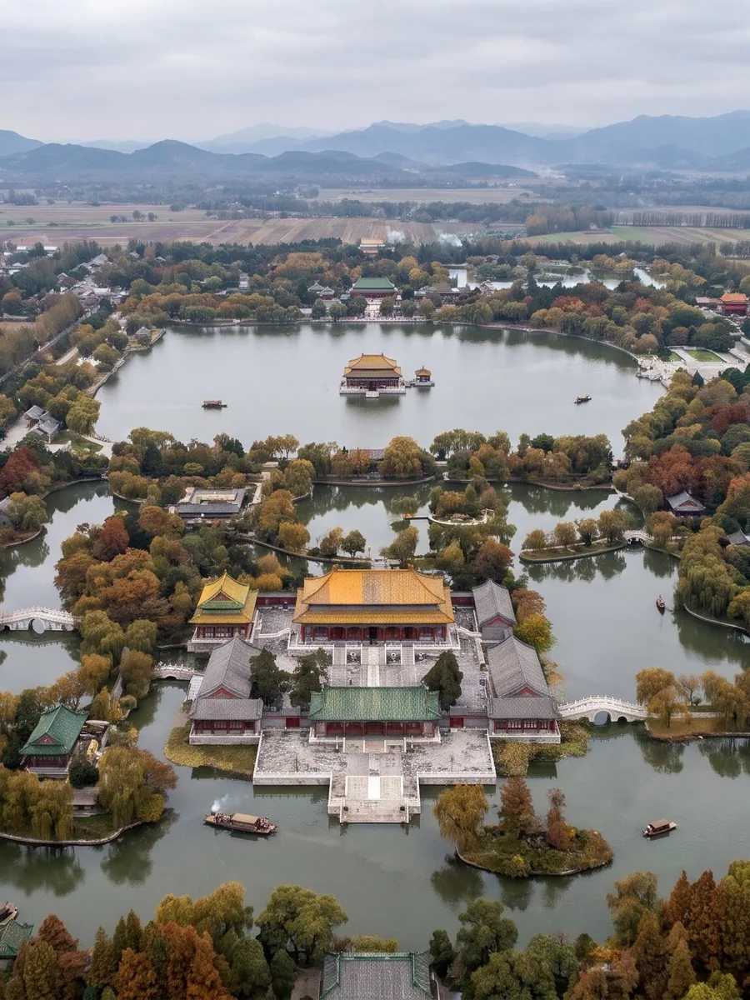
AI visualisationThe gardens from the west
From high above the west on an overcast autumn day, looking east over the lakes and islands to 福海 Fu Hai.
At this height the AI has redrawn the layout freely, and the mountains on the horizon are its own: take it as an impression, not a map.
From the west, about 1,400 m up, looking east. Nearest landmark: 文源阁 Wenyuan Ge, about 330 m.
Open this view in 3D
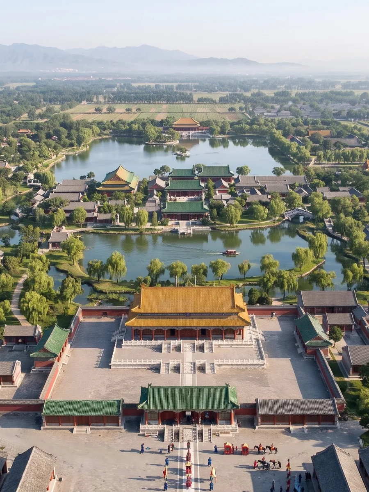
AI visualisationThe axis from above
Looking north from above the forecourt: 大宫门 Da Gongmen, the court, 正大光明 Zhengda Guangming, then the Front Lake and the emperor's island.
The halls' places follow our model, but the AI has left out the canal and the second gate, 出入贤良门 Churu Xianliang Men, and coloured the roofs: the album of 1744 paints them grey.
From the south, about 220 m up, looking north. Nearest landmark: 大宫门 Da Gongmen, about 60 m.
Open this view in 3DIn 3D: 正大光明 Zhengda Guangming

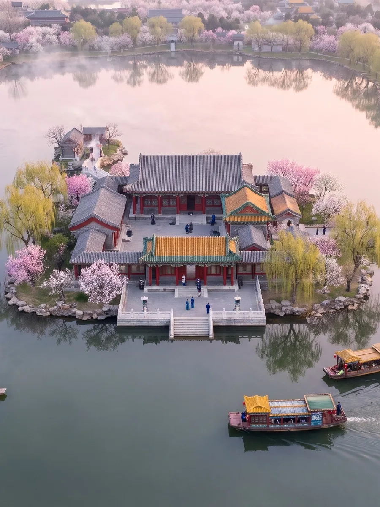
AI visualisation福海 Fu Hai in spring
蓬岛瑶台 Pengdao Yaotai from high over the south of the lake, the shores in blossom, an early spring morning.
The island's place follows our model; the halls, the blossom and the boats are the AI's.
From the south, about 280 m up, looking north. Nearest landmark: 蓬岛瑶台 Pengdao Yaotai, about 400 m.
Open this view in 3DIn 3D: 蓬岛瑶台 Pengdao Yaotai

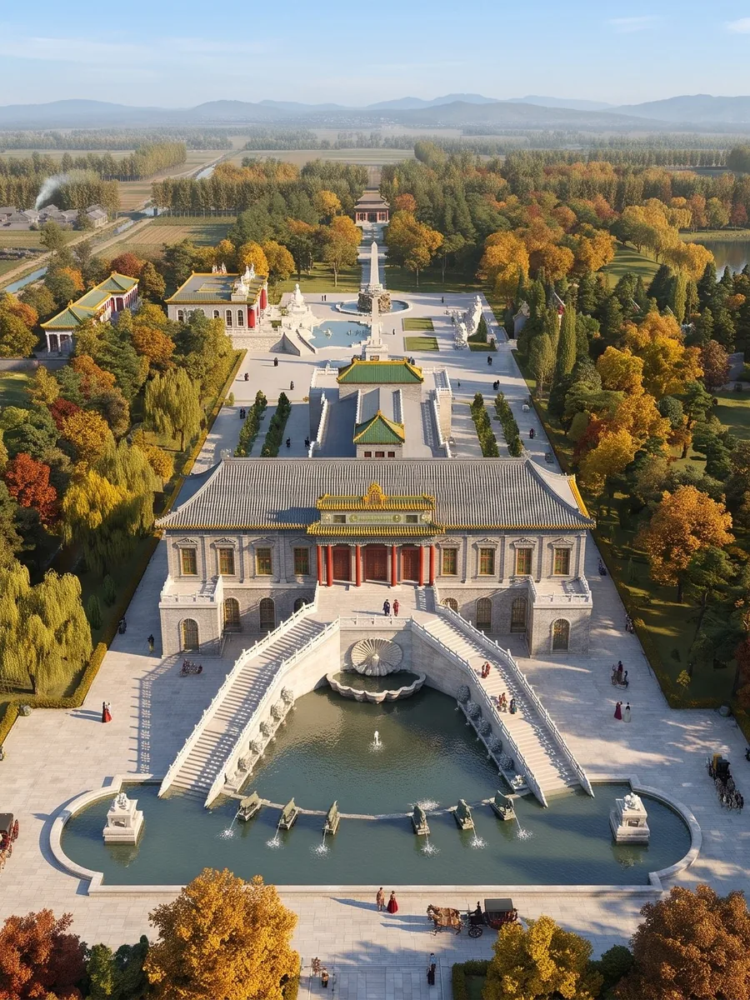
AI visualisationThe European palaces from above
海晏堂 Haiyan Tang from above the west on an autumn afternoon, the strip of the European palaces running on behind it.
The west front, its stair and the basin follow our model; what lies behind it, the trees and the carriages are the AI's free drawing.
From the west, about 100 m up, looking east. Nearest landmark: 谐奇趣 Xieqiqu, about 110 m.
Open this view in 3DIn 3D: 海晏堂 Haiyan Tang
home-surroundings · 9:16Beyond the walls
Camps, villages and the Western Hills.
Scroll sideways
Our model, held against the copperplate.
Drag the divider. On the left, our 3D model of 大水法 Dashuifa, the Great Fountain, seen through the camera we fitted to plate 15, with the plate's taller heights allowed for. On the right, the plate itself. The engraver idealised, and our model guesses where nothing survives: across the plate the fit is 1.42 m (root mean square), worst where the plate shortens the court.
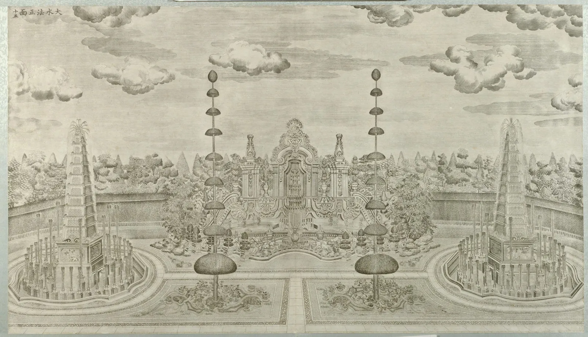
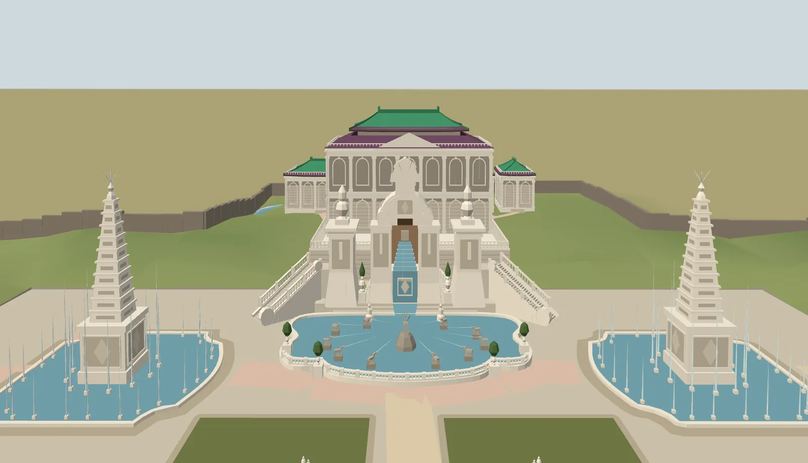
Left: our model, screenshot from the camera fitted to the plate. Right: 大水法正面, plate 15 of the copperplates, Yi Lantai, 1786, Palace Museum, Beijing, via Wikimedia Commons, public domain. Credit
October 1860.
During the Second Opium War, British and French troops looted the palace and British troops burned it.
- 6 OctoberFrench and British troops captured the palace.
- 7–9 OctoberBoth armies looted it. The Forty Scenes album was among what was taken; it is now in the Bibliothèque nationale de France.
- 18–19 OctoberLord Elgin, the British High Commissioner, ordered its destruction, in retaliation for the torture and execution of prisoners held by the Qing. British troops under General Sir James Hope Grant burned most of it. The French commander refused to take part.
Today the site is a public park in Haidian District. The ruins of the European-style palaces are its most prominent remains, and lakes and waterways in the eastern half have been dug out and refilled.
西洋楼 Xiyang Lou, what the ruins hold.
The ruins that everyone knows from the Old Summer Palace are these: a strip of European-style palaces and fountains, built for the Qianlong Emperor from 1747 with Jesuit designers and Chinese craftsmen. We have gone through them building by building: the engravings, the photographs of the ruins then and now, what is known of their sizes, what survives and where the fragments are.

Halls, lakes and hills, one scene at a time.
Outside the European palaces, the gardens were Chinese halls and courts set round lakes and hills. For each scene and compound we have gathered what the album of 1744, the Qing texts and plans, the excavations and today's site say about it, and what is known of its size, so that it can be modelled.
 Leaf 1 · 1744
Leaf 1 · 1744正大光明 Zhengda Guangming
The audience hall on the south axis.
Read the dossier Leaf 3 · 1744
Leaf 3 · 1744九洲清晏 Jiuzhou Qingyan
The emperor's apartments on the island by the Back Lake.
Read the dossier Leaf 13 · 1744
Leaf 13 · 1744万方安和 Wanfang Anhe
A hall built in the lake on the plan of the character 卍.
Read the dossier Leaf 17 · 1744
Leaf 17 · 1744鸿慈永祜 Hongci Yonghu
The ancestral temple, 安佑宫 Anyou Gong.
Read the dossier Leaf 20 · 1744
Leaf 20 · 1744澹泊宁静 Danbo Ningjing
Paddies all round, and a hall on the plan of the character 田.
Read the dossier Leaf 32 · 1744
Leaf 32 · 1744蓬岛瑶台 Pengdao Yaotai
The islets in the middle of 福海 Fuhai.
Read the dossierLeaves of the Forty Scenes album, 1744, by 唐岱 Tang Dai and 沈源 Shen Yuan. Source gallica.bnf.fr / BnF. Credit
Not an empty plain: gardens, camps, villages.
The gardens stood among other imperial gardens, the camps of the banner guard, the market town of 海淀 Haidian, villages and rice fields fed by the springs of the Jade Spring hills. We have gathered what the Qing texts, the accounts of 1860 and the old maps say about that ring, and put a first, labelled version of it round the gardens in the 3D view. Most of it is inferred, and the page says how sure each part is.
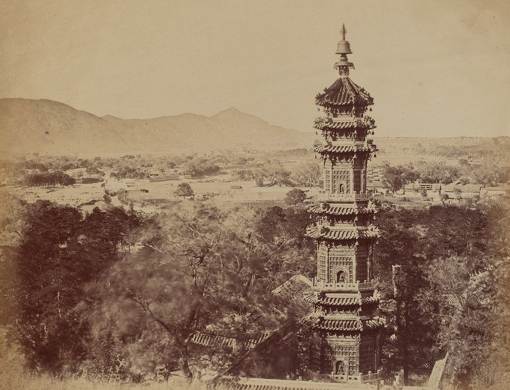
Every building traced to a source.
Qing site plans give positions and footprints. The Forty Scenes album and the Xiyang Lou engravings of the 1780s give forms, roofs, trees and bridges. Today's lakes, islands and hills tie the old plans to the ground.
Every feature carries its source and a grade. Where the evidence runs out we guess, and say so.
- AShown on a source made while the gardens stood, or measured on remains that survive unchanged.
- BA later source: photographs of the ruins, 20th-century surveys, modern scholarly reconstructions, or a written description only.
- CInferred from typology or symmetry. Every guess is a C.
Do you have a photograph, a plan, a text?
Most halls are still drawn from their class, not from their own evidence. A photograph, a plan or a text that gives a size can turn a guess into a graded fact.
To do: the contact address for this project is not set yet.